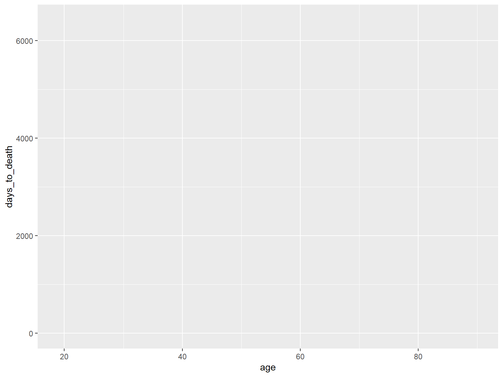
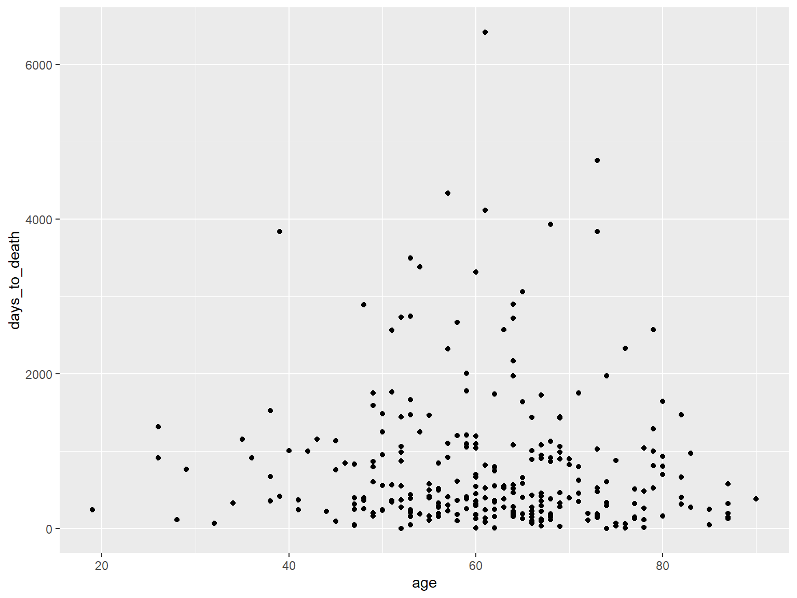

RStudio
Grafische Benutzeroberfläche und Entwicklungsumgebung für R

R for Data Science, Hadley Wickham & Garrett Grolemund 2016
Andreas Mock
Kursunterlagen: studyr.de
R ist eine freie Programmiersprache für statistische Berechnungen und Grafiken.R bereits alt ist (Erscheinungsjahr 1993) gilt diese als Standardsprache für statistische Problemstellungen in Wirtschaft und WissenschaftR nur hierzuR, als auch alle Pakete sind kostenlos!!Grafische Benutzeroberfläche und Entwicklungsumgebung für R
R for Data Science, Hadley Wickham & Garrett Grolemund 2016

R for Data Science, Hadley Wickham & Garrett Grolemund 2016
Programmieren mit R
Hands-On Programming with R, Garrett Grolemund
- Kapitel 1, 2, 3, 4, 5, 7, 9
Link
Die “Bibel” für R User
R for Data Science, Hadley Wickham & Garrett Grolemund
Link
Kochbuch für R Plots
R Graphics Cookbock, Winston Chang
Link
R ist eine Objekt-orientierte Programmiersprache. Es dreht sich daher im Grunde alles darum Objekte herzustellen, zu manipulieren und zu visualisieren.
R ist case-sensitive - Groß- und Kleinschreibung ist wichtig!
## [1] 67## Error in eval(expr, envir, enclos): object 'Alter' not foundDef: Sammlung mehrerer Objekte gleicher Art (Länge 1 ist möglich).
# numerischer Vektor mit Länge 1
x1 <- 5
# Charaktervektor mit Länge 1 (Text wird in "" gesetzt)
x2 <- "green"
# Vektoren mit Länge 3
y1 <- c(1,3,9)
y2 <- c("gene1","gene2","gene3")Subsetting:
## [1] "gene1" "gene2" "gene3"## [1] "gene1" "gene2"Kombination mehrerer Vektoren gleichen Typs (numerisch oder Charakter). Die Matrix kann Zeilen- und Spaltennamen haben.
matrix <- cbind(y1, y1, y1)
rownames(matrix) <- y2
colnames(matrix) <- c("sample1","sample2","sample3")
matrix## sample1 sample2 sample3
## gene1 1 1 1
## gene2 3 3 3
## gene3 9 9 9Ein Subset kann man sich mit der folgenden Syntax anzeigen lassen:
Bespiele hierfür sind:
## sample1 sample2 sample3
## 1 1 1## gene1 gene2 gene3
## 1 3 9## sample1 sample2 sample3
## gene1 1 1 1
## gene2 3 3 3Im Gegensatz zu Matrizen können in Dataframes Vektoren verschiedenen Typs (z.B. numerischer Vektor und Charaktervektor) miteinander kombiniert werden. Wichtig: Die Vektoren müssen die gleiche Länge haben.
## age gender
## 1 50 male
## 2 47 male
## 3 87 femaleSomit eignen sich Dataframes insbesondere für die Analyse von Patientenmetadaten im Rahmen von molekularbiologischen Experimenten oder klinischen Studien.
## age gender
## 1 50 male
## 2 47 male
## 3 87 femaleEine Besonderheit von Dataframes ist die Möglichkeit einzelne Spalten durch den Spaltennamen zu selektieren.
## [1] 50 47 87Dies entspricht der folgenden Matrixnotation
## [1] 50 47 87Die Funktion class ermöglicht es den Typ eines Objektes zu eruieren:
## [1] "data.frame"Die Grundsyntax einer jeden Funktion ist
Die Argumente sind hierbei fakultativ. R besitzt eine Vielzahl von Funktionen, ohne dass zusätzliche Packete geladen werden müssen.
## [1] 13## [1] 4.333333Die Funktion help öffnet die Dokumentation in RStudio und zeigt die notwendigen Objekte und Argumente zu jeder Funktion an. Als Beispiel, was genau macht die Funktion cbind?
## starting httpd help server ... doneEin Paket ist nicht anderes als eine wohldurchdachte Formelsammlung, die für eine spezifische wissenschaftliche Fragestellung (z.B. die Analyse von Sequenzierungsdaten) entwickelt wurde.
Installation
Ins Environment laden
Metadaten des The Cancer Genome Atlas (TCGA) zur Analyse von Kopf-Hals-Tumoren (head and neck squamous cell carcinoma; HNSCC). Der Datensatz fasst die wichtigsten klinisch-pathologischen Charakteristika der Studienkohorte (n=279) zusammen.
## # A tibble: 279 x 11
## id age alcohol days_to_death gender neoplasm_site grade pack_years
## <chr> <int> <chr> <int> <chr> <chr> <chr> <dbl>
## 1 TCGA~ 69 YES 461 MALE Oral Tongue G3 51
## 2 TCGA~ 39 YES 415 MALE Larynx G2 30
## 3 TCGA~ 45 YES 1134 FEMALE Base of Tong~ G2 30
## 4 TCGA~ 83 NO 276 MALE Larynx G2 75
## 5 TCGA~ 47 YES 248 MALE Floor of Mou~ G2 60
## 6 TCGA~ 72 YES 190 MALE Buccal Mucosa G1 20
## 7 TCGA~ 56 YES 845 MALE Alveolar Rid~ G2 NA
## 8 TCGA~ 51 YES 1761 MALE Tonsil G2 NA
## 9 TCGA~ 54 YES 186 MALE Larynx G2 62
## 10 TCGA~ 58 YES 179 FEMALE Floor of Mou~ G3 60
## # ... with 269 more rows, and 3 more variables: tabacco_group <chr>,
## # tumor_stage <chr>, vital_status <chr>hnscc Datensatzes## [1] "id" "age" "alcohol" "days_to_death"
## [5] "gender" "neoplasm_site" "grade" "pack_years"
## [9] "tabacco_group" "tumor_stage" "vital_status"## [1] 69 39 45 83 47 72## Min. 1st Qu. Median Mean 3rd Qu. Max.
## 19.00 53.00 61.00 61.32 69.00 90.00## [1] "YES" "YES" "YES" "NO" "YES" "YES"##
## NO YES
## 85 188##
## FALSE TRUE
## 273 6## Min. 1st Qu. Median Mean 3rd Qu. Max. NA's
## 0.0 218.8 443.0 789.0 999.2 6416.0 1##
## FEMALE MALE
## 76 203##
## Alveolar Ridge Base of Tongue Buccal Mucosa Floor of Mouth Hard Palate
## 7 12 8 26 5
## Hypopharynx Larynx Lip Oral Cavity Oral Tongue
## 2 72 1 49 76
## Oropharynx Tonsil
## 2 19##
## G1 G2 G3 G4 GX
## 23 176 71 1 8## Min. 1st Qu. Median Mean 3rd Qu. Max. NA's
## 0.01685 30.00000 45.00000 50.62485 60.00000 300.00000 125##
## Current reformed smoker for < or = 15 years
## 81
## Current reformed smoker for > 15 years
## 49
## Current smoker
## 90
## Lifelong Non-smoker
## 52##
## Stage I Stage II Stage III Stage IVA Stage IVB
## 14 44 38 139 5##
## DECEASED LIVING
## 116 163Visualisierungen mit dem ggplot2 Paket (Teil des tidyverse Pakets) neuer Standard in R.
Prinzip: Malen eines Gemähldes - Schicht für Schicht.
Metadaten des Bespieldatensatzes, die wir explorieren können:
## [1] "id" "age" "alcohol" "days_to_death"
## [5] "gender" "neoplasm_site" "grade" "pack_years"
## [9] "tabacco_group" "tumor_stage" "vital_status"Leere Leinwand. age auf der x-Achse und days_to_death auf der y-Achse.

Dotplot
